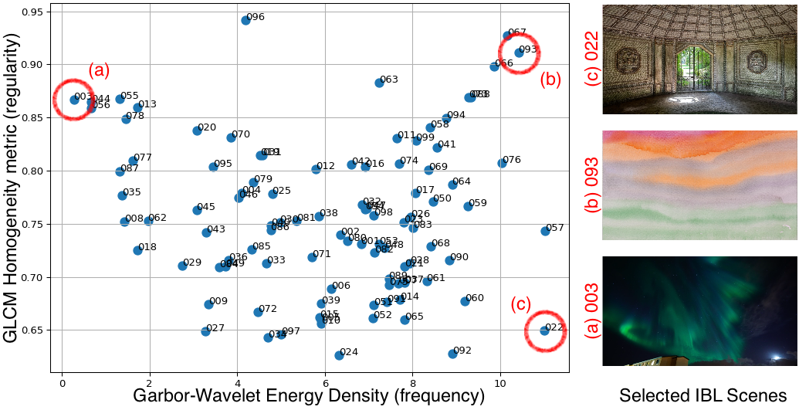

1. Statistical Approach and Results for (iii): Optimizing performance via statistically-drive texture selection
In the carousel below, we present the outcomes and insights of experiment (iii). This concerns the capture scenrio where
only 1x IBL scene/background is captured, as was done in experiment (ii.a). However, we question whether a texture could
be selected to optimize for VSR quality. To accomplish this we evaluate two important traits associated with spatially-varying
RIC-IBL textures:
(1) The frequency density of the image, i.e. how varied is the frequency distribution of the texture?
(2) The texture regularity/uniformity, i.e. how unique are local image patches?
For (1) we use the energy function for the Garbor-Wavelet coefficients to indicate the variance and magnitude of texture-frequencies,
in a single metric. The Garbor-Wavelet is typically used for natural images, over e.g. Fourier or other Wavelet schemes.
For (2) we use the homoeneity heuristic from the Grey-Level Co-occurent Matric (GLCM). This is another common scheme for
assessing the regularity/uniformity of a texture. A set of heuristics are avaliable under the GLCM algorith, though we
find the results are relatively similar, so we select the homogeneity metric for this paper. The GLCM algorithm is reliant
on computing metrics based on filter direction and scale. This is essentially the direction along the image should we move to compare
the current pixel-patch to the next, and how far we should move. In this paper we evaluate four directions, 0deg, 45deg, 90deg, 135deg, and
four distances 1 pixel, 2 pixels and 4 pixels. The
GLCM Scikit-learn package
handles this all for us.
Statistical plot of the frequency and regularity metrics used for optimizing reconstruction on K=1 scenes for Datset 3
The y-axis uses the homogeneity metric associated with the GLCM algorithm for image texture classification. The x-axis averages the square of RGB Garbor-wavelet cooefficients (i.e. the banded frequency magnitudes) producing the frequency-based energy density metric. We select (a) the lowest frequency, (b) the highest frequency and regularity and (c) the highest frequency and lowest regularity. The statistics are drawn by computing the x-y axis metrics per-camera for each of the 99 scenes in Dataset 3 and averaging. To avoid skewing selection, we use the camera-masks (discussed in the paper) to avoid evaluating the RIC-IBL background projections during statistical testing. Hence, these statistics are observations of the ground truth 3-D scene not including the IBL texture.
NVLS video on Dataset 3
(ignore the Gaussian ditractors caused by generating videos at a further distance from the scene center)
Pause frame showing the effectiveness of selecting the best texture for VSR

Assessing only the relighting capabilities, we can see that by selecting a texture with low regularity and high frequency features the NVLS results are much smoother and color accurate to the IBL texture. Not only does the low frequency texture produce poor lighting results, the geometry of the transparent object is also poorly reconstructed. The high frequency and regularity texture produces decent geometry but fails to produce colors corresponding to the IBl texture. The high frequency and low regularity texture produces both decent geometry and color estimates.
The results show that selecting the right texture can have an large impact on both reconstruction and lighting quality. This experiment effectively shows that textures can be statistically selected to boost VSR performance. Carrying this into the VP use-case, this insinuates that backgrounds can be designed for VSR prupose. In layman terms, directors would no longer need to make decisions about VFX and scene lighting before or during filming. If they capture scenes for VSR rather than for the final pixel, important creative decisions could be made later in the process with much more flexibility and fine-grained control. Especially considering that VSR inherits the editability and AOVs associated with Gaussian Splatting tools and research.